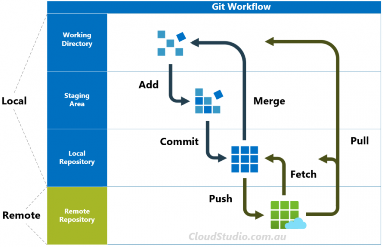
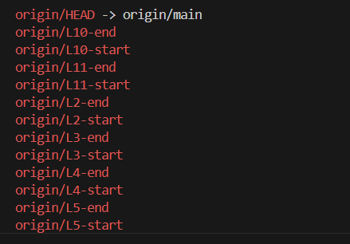

Git Documentation
GitHub Instruction
create a new repository on the command line
echo "# web-learn" >> README.md
git init
git add README.md
git commit -m "first commit"
git branch -M main
git remote add origin https://github.com/Adeoye369/web-learn.git
#If this is your first time pushing this branch, use the `-u` flag to set the upstream tracking relationship. This allows you to simply use `git push` in the future
git push -u origin main
…or push an existing repository from the command line
git remote add origin https://github.com/Adeoye369/web-learn.git
git branch -M main
git push -u origin main
Rename branch and Push
Deleting Branch from Remote
Delete Locally: To remove the branch from your own computer (ensure you are not currently on that branch):
git branch -d branch_name # (Deletes only if already merged)
git branch -D branch_name # (Force deletes even if unmerged)
General flow of info

Git Basics commands
Get started with git
once changes has been made in the working directory call:
git add <file_name or folder_name> # To Add file staged directory
git add * # to add all
git restore --staged <file_name or folder_name> # To remove from Stage back to workdir
git restore --staged * # to restore all to workdir
# once you are done staging and you are satisfied
git commit -m "Your commit msg goes here"
git commit --amend # add recent staged changes
git commit --amend --no-edit # no need to edit message
git commit --amend -m "An updated message for commit" # Add updated message
Branching
git branch dev_codes # Creating a new branch "dev_codes"
git checkout dev_codes # Switch to the new branch "dev_codes"
git checkout -b dev_codes2 # Create & switch to new branch "dev_codes2"
Checkout Fetched Content (into a new local branch)
git checkout -b <new_local_branch_name> <origin/remote_branch_name>
## for example
git checkout -b L11-start origin/L11-start
Use git branch -d <branch_name> to delete a merged branch.
USe git branch -D <branch_name> to force delete an unmerged branch
Remote Information
git remote # show origin name
git remote rename <old_name> <new_name> # eg.
git remote --help # loads help page with command
# To obtain only the remote URL:
git config --get remote.origin.url
# If you require full on a network of remote repo where the origin resides:
git remote show origin
# This will print all your remotes' fetch/push URLs:
git remote -v
# Add remote to your remote list
git remote add <name> <url> // git remote add origin1 https/github.com/user/proj
# UPDATING AN EXISTING ORIGIN
#Use this if you want to change the URL of a repository that is already linked (e.g., you moved your project to a new URL or switched from HTTPS to SSH)
git remote set-url origin <NEW_URL>
git remote -v # Verify after update
# First Push: After setting the origin, push your code and set the upstream tracking branch:
git push -u origin main
fetch, merge and pull
git fetch <remote> # fetch all remote
git fetch <remote> <branch> # fetch only specific branch
# use `git fetch origin <remote-branch-name>` fetching from the remote branch without merge
git fetch origin L8-start # fetch from L8-start branch
#After fetching, you need to merge the changes from the remote-tracking branch
#into your current local branch.
git merge origin/L8-start
git merge --abort # to abort merge
# combined fetch & merge from origin
git pull <remote_name> <branch_name>
git pull origin L8-start
# Updated file from the origin
git push <remote_name> <branch_name>
git push origin main
Why use git fetch?
Safety: It does not modify your local files or current working branch.
Review: It allows you to inspect changes before deciding to integrate them.
Comparison: You can compare your local branch to the remote version using git diff main..origin/main.
Integrating Changes
After fetching, if you want to apply the downloaded changes to your current branch, you must manually merge or rebase them:
- Switch to your branch:
git checkout main - Merge the fetched changes:
git merge origin/main
Note on git pull: While git pull is often used to get updates, it actually performs two steps: it runs git fetch followed immediately by git merge. Use git fetch instead if you want to avoid potential merge conflicts before you are ready to resolve them.
Undo a Git merge COMMIT that hasn't been pushed yet
if you accidentally merge a branch or you just want to under branch that has been **merged and commited **
Git fetch continuation
run git fetch origin to pull all branches from the remote
or git fetch origin <branch_name> to fetch specific branch
run git branch -r to show the remote branches

Inspect Specific Fetched Content:
To examine the content of a specific fetched branch or commit without merging it into your local branch, you can use git log or git show
with the remote-tracking branch name:
View commit history of a remote branch:
Inspect a specific commit from a remote branch:
git show origin/your_remote_branch_name^ #replace ^ with HEAD~N
# for Example
git show origin/L10-end HEAD~2 # show all changes from HEAD~0 to HEAD~2
Compare Local and Remote Branches:
To see the differences between your local l branch and the corresponding remote-tracking branch after a fetch, use git difference:
Git stash
My use case: Want to create a new branch but I have not commited currently staged changes
so I call :